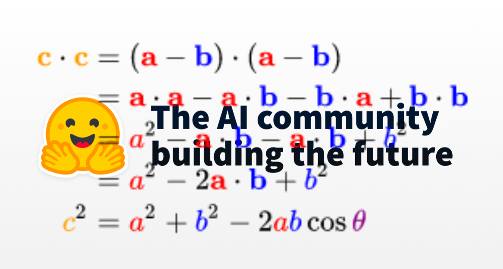

Semantic Search with Cosine Similarity

If you have a lot of text, how do you search though it? Keywords? What if these keywords never show up there? Imagine you want to know if Jerome Powell says something about ‘Inflation decrease’ but he might not say the exact words? You will not find it. Databases like Meilisearch offer synonyms, but this can only take you so far.
Similarity
Enter semantic search.
I first heard about it when I saw that OpenAI offers this. It is based around that text can be represented as vectors and similar texts are very close together ‘cosine similarity’. Complicated maths, but you don’t need to understand all of it to use it (I certainly don’t). Pretrained ML models can calculate vectors for any text. These vectors are specific to that particular model. To give you an understanding how such a vector looks like (I cut out 150 or so lines).
[-3.07975650e-01 -4.73436937e-02 -1.03426361e-02 1.10289887e-01-
1.38934078e-02 7.06083328e-02 -3.67332667e-01 1.16913512e-01-
2.93210179e-01 2.50628859e-01 -6.69540018e-02 4.43334401e-
011.70516875e-02 2.39368200e-01 -4.94712442e-01 2.04233713e-02-
2.03837603e-02 2.25737140e-01 1.33947954e-01 1.23015614e-
022.05453351e-01 -1.86783701e-01 1.81604587e-02 -3.47994678e-02
...
-1.66226476e-01 -5.37997723e-01 -1.25642300e-01 9.77484733e-
024.24027830e-01 -1.34015873e-01 3.46000522e-01 1.68134421e-01-
1.16296090e-01 -2.67094791e-01 4.55991402e-02 1.12584665e-
015.82341433e-01 5.29223680e-02 -3.03590298e-02 -3.04945894e-02-
2.88803399e-01 -4.12475541e-02 -9.93557051e-02 7.09266439e-
021.81840926e-01 -1.34017412e-02 1.19283721e-01 -1.16099559e-
012.49713331e-01 -1.49268331e-02 -6.08050339e-02 3.11732795e-02]
This just represents 'Inflation decrease'.
The Code
How would that work now? How do I find out if Mr. Powell says something about Inflation decrease in his speech?
Here is the code for that.
import numpy as np
from sentence_transformers import SentenceTransformer
with open("powell.txt") as f:
text = f.read()
text.replace("\n", " ")
sentences = text.split(".")
query = "Inflation decrease"
model = SentenceTransformer('nblokker/debatenet-2-cat')
text_embed = model.encode(query)
embeddings = model.encode(sentences)
def cosine_similarity(a, b):
return np.dot(a, b) / (np.linalg.norm(a) * np.linalg.norm(b))
for c in range(len(sentences)):
similarity = cosine_similarity(text_embed, embeddings[c])
if similarity > 0.75:
print(f"{similarity} {sentences[c]} ")
After reading in the file and settings the query, it loads the model nblokker/debatenet-2-cat from huggingface.co (~1 GB of data), transforms the question and the sentences to vectors.
I searched on the website for a model with Sentence Similarity. There might be even better ones. Try out a few. OpenAI’s models are for sure far more sophisticated and perform better. Check out their (API)[https://platform.openai.com/docs/guides/embeddings] for embeddings. But you pay for it.
The cosine_similiarty function is from the original openAI util lib. It will calculate the similarity between each sent cense and the search term. At the end, I’m printing all sentences with a 75% similarity that he talks about an inflation decrease.
The Result:
0.8572854399681091 It will take substantially more evidence to give comfort that inflation is actually declining
0.858913242816925 So when will inflation come down? I could answer this question by pointing to the inflation forecasts of private-sector forecasters or of FOMC participants, which broadly show a significant decline over the next year
0.8331760168075562 But forecasts have been predicting just such a decline for more than a year, while inflation has moved stubbornly sideways 0.7778124213218689 For now, let’s put aside the forecasts and look instead to the macroeconomic conditions we think we need to see to bring inflation down to 2 percent over time
0.7833545207977295 Despite the tighter policy and slower growth over the past year, we have not seen clear progress on slowing inflation
0.7558010220527649 Core goods inflation has moved down from very high levels over the course of 2022, while housing services inflation has risen rapidly
0.9091041088104248 Indeed, a decline in this inflation underlies most forecasts of declining inflation
0.7939192652702332 Let’s sum up this review of economic conditions that we think we need to see to bring inflation down to 2 percent
With that, searching through text is on a different level. Of course, this is a very simple example, but still fun to play with. Next stop would be storing that in vector databases or using something like pgvector for postgres to store and search for these huge vectors efficiently.